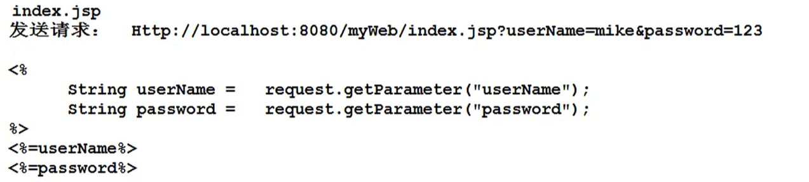

一、EL表达式
1、命令格式：${作用域对象别名.共享数据}
2、命令作用：
1>EL表达式是EL工具包提供的一种特殊的命令格式【表达式 命令格式】
2>EL表达式在JSP文件上使用
3>负责在JSP文件上从指定作用域对象读取指定的共享数据并输出到响应体中
二、EL表达式中作用域对象别名
1、JSP可以使用的作用域对象
1>ServletContext application:全局作用域对象
2>HttpSession session:会话作用域对象
3>HttpServletRequest requst:请求作用域对象
4>PageContext pageContext:当前页作用域对象（主要用于JSTL标签与JSP文件之间的数据共享）
注意：PageContext是 JSP文件独有的作用域对象，Servlet中没有， 在当前页作用域对象存放的共享数据仅能在当前JSP文件使用，不能共享给其他Servlet或者JSP
2、EL表达式中作用域对象别名
JSP EL表达式
application ${applicationScope.共享数据名}
session ${sessionScope.共享数据名}
request ${requestScope.共享数据名}
pageContext ${pageScope.共享数据名}
三、EL表达式将引用对象属性写入到响应体
1、命令格式：${作用域对象别名.共享数据名称.属性名}
2、命令作用：从作用域对象读取指定共享数据关联的引用对象的属性值，并写入响应体
注意：
1、private属性也可以这么写，EL表达式用的是反射机制
2、EL表达式没有提供遍历集合方法，无法从作用域对象读取集合内容输出
四、El表达式简化版
1、命令格式：${共享数据名}
2、命令作用：EL表达式允许开发人员开发时省略作用域对象别名
3、工作原理：
EL表达式简化版由于没有指定作用域对象，所以执行时采用【猜】算法
先【pageContext】再【request】再【session 】再【application】最后nul；
4、存在隐患：容易降低程序执行的效率
容易导致数据定位的错误
5、应用场景：
设计目的：简化从pageContext读取共享数据并输出难度
6、EL表达式简化版尽管存在很多隐患，但是实际开发过程中，开发人员为了节省时间，一般都使用简化版，拒绝使用标准版
五、EL表达式----支持运算表达式
1、前提：在JSP文件中，有时需要将读取到的共享数据进行运算之后，将结果写入到响应体中
2、运算表达式
1>数学运算
2>关系运算：> >= == < <= !=
gt ge eq lt le !=
3>逻辑运算 && || ！
六、EL表达式提供内置对象
1、命令格式：${param.请求参数名}
2、命令作用：通过请求对象读取当前请求包中请求参数内容并将请求参数内容写入到响应体
3、代替命令


1、命令格式：${paramValues.请求参数名[下标]}
2、命令作用：如果浏览器发送的请求参数是一个请求参数关联多个值，此时可以通过paramvalues读取请求参数下指定位置的值，并写入响应体当中
3、代替命令:


七、可能出现的异常
javax.el.PropertyNotFoundException(找不到属性)